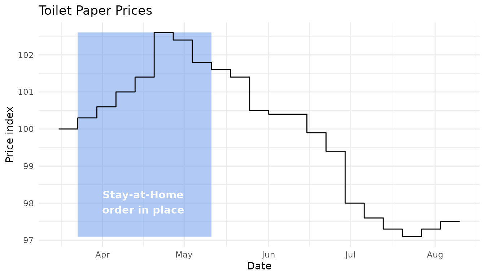

vignettes/working-with-ldf-intervals.Rmd
working-with-ldf-intervals.RmdThis vignette describes how to work with LDF intervals. We’ll work towards visualising a time series chart.
LDF intervals provide a new vector type for representing reference.data.gov.uk intervals. These intervals are created using the interval ontology.
The ontology describes a URI pattern like http://reference.data.gov.uk/id/month/2020-11. If you dereference this URI (click on the link), you’ll get an RDF document back describing the interval.
The description is quite verbose, enumerating all of the days contained in the month and calling it an “An interval of 1 month beginning at the start of the 1st second of 1st minute of 1st hour of Sunday the 1st November 2020 in the Gregorian Calendar”.
We could treat intervals like any other RDF resource. We could figure out a tabular representation of the facts we care about (e.g. a label, start and end instants etc) then use resource() to build an ldf resource vector.
Unfortunately, there’s no SPARQL endpoint we can use to download the interval descriptions. Any tool for executing SPARQL queries needs triple statements to work from. We can’t load all time into a database because it’s infinite. We could make the problem tractable by setting limits on precision and time range but that would still lead to a very large set of data of which only very few resources were ever used.
We could alternatively create our URIs then download the description for each from the intervals API. This would work, but it would be quite cumbersome. Indeed if we know the descriptions we need, and how they relate to the interval URIs then we can recreate the logic of the API ourselves, obviating the need to make any HTTP requests.
This is exactly what LDF intervals provide - a set of functions which, given an interval URI, can determine the description.
Creating an interval is quite simple, we only need provide a URI (as a character vector):
nov2020 <- interval("http://reference.data.gov.uk/id/month/2020-11")
We get a label to represent this:
nov2020 #> <ldf_interval[1]> #> [1] 2020-11
We can also get to the start and end instants:
int_start(nov2020) #> [1] "2020-11-01"
int_end(nov2020) #> [1] "2020-11-30"
These functions return objects of class Date which means we can use them in, for example, ggplot.
To demonstrate this we’ll first downloading a data cube designed to help track the impact of the CoViD-19 pandemic.
price_changes <- get_cube("http://gss-data.org.uk/data/gss_data/covid-19/ons-online-price-changes-for-high-demand-products#dataset")
We can then extracting a time series from it - here, the price of Toilet Paper.
library(dplyr, warn.conflicts = F) tp <- filter(price_changes, property(price_changes$product, "notation")=="toilet-rolls") head(tp) #> # A tibble: 6 x 5 #> measure_type reference_period product percent unit_of_measure #> <ldf_rsrc> <ldf_ntrv> <ldf_rsrc> <dbl> <ldf_rsrc> #> 1 Percent 2020-03-16 P7D Toilet rolls 100 Price Change Indice #> 2 Percent 2020-03-23 P7D Toilet rolls 100. Price Change Indice #> 3 Percent 2020-03-30 P7D Toilet rolls 101. Price Change Indice #> 4 Percent 2020-04-06 P7D Toilet rolls 101 Price Change Indice #> 5 Percent 2020-04-13 P7D Toilet rolls 101. Price Change Indice #> 6 Percent 2020-04-20 P7D Toilet rolls 103. Price Change Indice
The interval is used for the reference_period column.
We can use another interval to describe the duration of the UK stay-at-home order:
lockdown <- interval("http://reference.data.gov.uk/id/gregorian-interval/2020-03-23T00:00:00/P49D")
The we can plot these together:
library(ggplot2) ggplot(tp, aes(int_start(reference_period), percent)) + annotate("rect", xmin=int_start(lockdown), xmax=int_end(lockdown), ymin=min(tp$percent), ymax=max(tp$percent), fill="cornflowerblue",alpha=0.5) + annotate("text", x=(int_end(lockdown) - int_start(lockdown)) / 2 + int_start(lockdown), y=min(tp$percent), hjust="middle", vjust=-1, colour="white", fontface="bold", label="Stay-at-Home\norder in place") + geom_step() + labs(title="Toilet Paper Prices", x="Date",y="Price index") + theme_minimal()

It looks like the panic-buying had slowed (at least relative to supply) even before the lockdown restrictions were lifted.